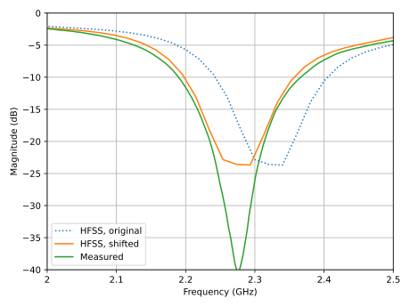
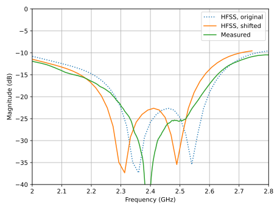

Table of Contents
1. Измерения параметров патч-антенн S-диапазона
1.1. Патч-антенна на 2.32 ГГц
Измерения патч-антенны проводились в двух режимах:
- Без резистора в цепи делителя Вилкинсона (R = \(\infty\))
- С резистором
Без резитора измерения S-параметров указывают на ширину полосы самой антенны. С припаянным резистором измеряется ширина полосы не антенны, а самого делителя (она больше ширины полосы антенны).
Измерения показали, что резонансная частота антенны отличается от расчетной примерно на 2 процента. Поэтому для справки на графиках зависимости коэффициента отражения от частоты приведены как исходные расчетные данные, так и смещенные на эти самые 2 процента по частоте.
1.1.1. Измерения без резистора (R = \(\infty\))

Figure 1: Патч 2.32 ГГц, R = \(\infty\)
| Центральная частота, ГГц | Ширина полосы, ГГц | Ширина полосы, % | |
|---|---|---|---|
| HFSS, original | 2.3220 | 0.1060 | 4.5650 |
| HFSS, shifted | 2.2756 | 0.1039 | 4.5650 |
| Measured | 2.2748 | 0.1125 | 4.9456 |
1.1.2. Измерения с резистором (R = 100 Ом)

Figure 2: Патч 2.32 ГГц, R = 100 Ohm
| Центральная частота, ГГц | Ширина полосы, ГГц | Ширина полосы, % | |
|---|---|---|---|
| HFSS, original | 2.3100 | 0.5280 | 22.8571 |
| HFSS, shifted | 2.2638 | 0.5174 | 22.8571 |
| Measured | 2.2763 | 0.5385 | 23.6573 |
1.2. Патч-антенна на 2.42 ГГц
1.2.1. Измерения без резистора (R = \(\infty\))

Figure 3: Патч 2.42 ГГц, R = inf
| Центральная частота, ГГц | Ширина полосы, ГГц | Ширина полосы, % | |
|---|---|---|---|
| HFSS, original | 2.4250 | 0.1160 | 4.7835 |
| HFSS, shifted | 2.3765 | 0.1137 | 4.7835 |
| Measured | 2.3768 | 0.1155 | 4.8596 |
1.2.2. Измерения с резистором (R = 100 Ом)

Figure 4: Патч 2.42 ГГц, R = 100 Ohm
| Центральная частота, ГГц | Ширина полосы, ГГц | Ширина полосы, % | |
|---|---|---|---|
| HFSS, original | 2.4215 | 0.4290 | 17.7163 |
| HFSS, shifted | 2.3731 | 0.4204 | 17.7163 |
| Measured | 2.3843 | 0.4815 | 20.1950 |
1.3. Оценка коэффициента усиления антенн
Две антенны размещались на расстоянии около 1 метра друг от друга и подключались к портам векторного анализатора цепей. Далее вариацией взаимного поворота антенн и высоты установки подбиралось положение, максимизирующее коэффициент передачи S21.
Для одинаковых антенн по формулу Фрииса можно оценить значение коэффициента усиления:
\begin{equation*} G = \cfrac{1}{2} \left(S_{21} - 20 \lg{\cfrac{\lambda}{4 \pi D}}\right) \end{equation*}Полученное в результате измерений значение (5..6 дБи) хорошо согласуется с расчетным (5.7 дБи).
1.4. Заключение
Обе антенны имеют похожие характеристики:
- Ширина полосы антенны без делителя Вилкинсона: 5 процентов
- Ширина полосы делителя: 20 процентов
- Резонансные частоты отличаются от расчетных на 2 процента в меньшую сторону
- Предварительно подтвержден коэффициент усиления антенн
По итогу – требуется коррекция размера патч-антенн с учетом фактической резонансной частоты.